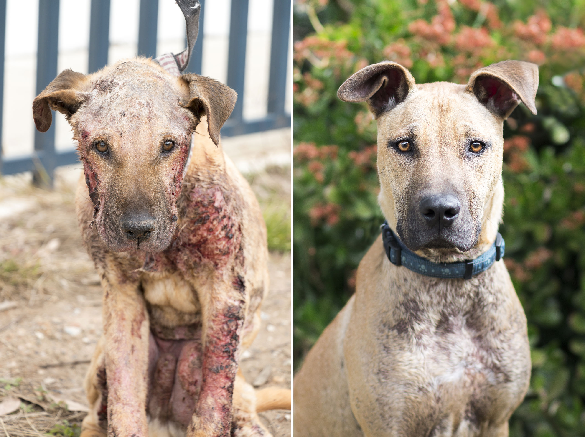
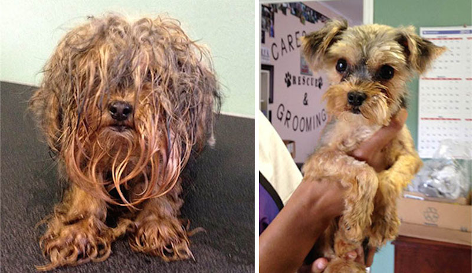
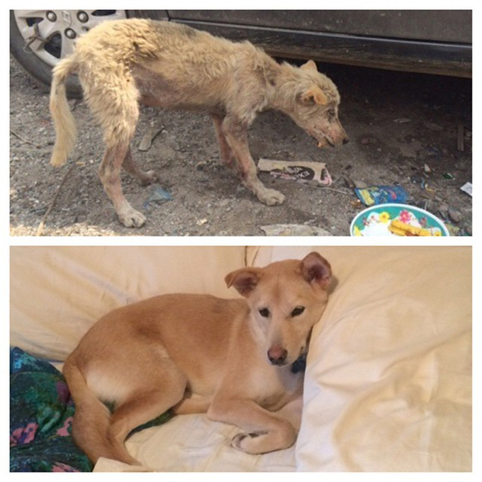

Ne mundohemi që t'i shpetojmë të gjitha kafshët e pastreha
dhe në nevoje dhe shpresojme që gjithmonë t'ia arrimë qëllimin tonë, të
shpëtojmë jetë të pafajshme.Këtu janë të paraqitur
disa nga qentë e fundit që i kemi shpëtuar:

Ky është Rexi. Stafi ynë e gjeti tek mbeturinat dhe kishte
shumë pak kohë që të mbijetonte.Ai kishte një sëmundje shumë të rendë të
lëkurës për shkak të papastërtisë së madhe. Foto e parë është bërë në nëntor
2016 ndërsa foto e dytë në shkurt 2017. Rexi qdo ditë e më shumë po
permirësohet dhe pas një muaji ai është gati që të adoptohet

Kjo është Maya. Ajo është gjetur në një gropë në periferi të
qytetit në Mars 2017 dhe në foton e pare tregohet gjendja e saj. Ajo e mori
veten shumë shpejt dhe tashmë është gati për t'u adoptuar

Kjo është Pika. Gjendja e saj kur e gjetëm ishte shumë e keqe.
Atë e gjetem duke u endur nëpër rrugë dhe shumë e uritur. Fotoja e parë
është bërë në tetor 2016 ndërsa e dyta në Mars 2017. Gjendja e saj është
përmirsuar dukshëm dhe shpresojmë se për një kohë shumë të shkurtër ajo do
jetë në një familje të ngrohtë